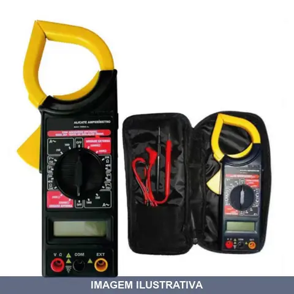
ALICATE AMPERIMETRO DIGITAL COM ESTO BRASFORT
Alicate amperímetro digital com chave seletora. Combina voltímetro e medidor de corrente em formato de alicate. Display LCD 3½ dígitos com indicação de bateria fraca. Indicação de Uso: Medições de tensão e corrente em instalações e manutenção elétrica. Vantagem Prática: Formato de alicate facilita o uso com uma mão em espaços confinados.
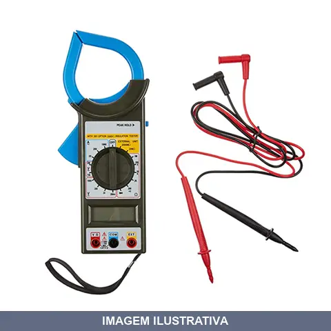
ALICATE AMPERIMETRO DIGITAL ET- MINIPA
Modelo destinado a hobbistas, que se destaca pela resolução de 0,01A, corrente máxima de 1000A e função Peak Hold.
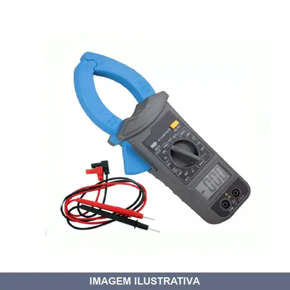
ALICATE AMPERIMETRO DIGITAL ET-3200B MINIPA
Indicação de Uso: Medição de tensão DC/AC, corrente AC e resistência em instalações elétricas e manutenção / Material e Resistência: Garra com iluminação integrada, display LCD 3-1/2 dígitos (2000 contagens), detecção de tensão sem contato / Vantagem Prática: Função Peak Hold para captura de picos de corrente, leitura facilitada em ambientes com pouca luminosidade.
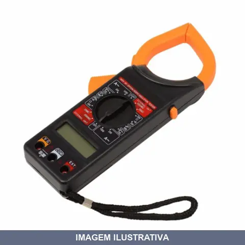
ALICATE AMPERIMETRO DIGITAL NOLL
Alicate amperímetro digital indicado para medição de corrente elétrica em circuitos. Display LCD de 3 1/2 dígitos. Abertura da garra: 54mm. Tensão CA até 750V, DC até 1000V. Corrente CA de 200A a 1000A. Resistência de 20Ω a 20kΩ. Testes de continuidade, isolação até 500V e função de diodo. Inclui bateria 9V, pontas de prova e estojo de proteção.
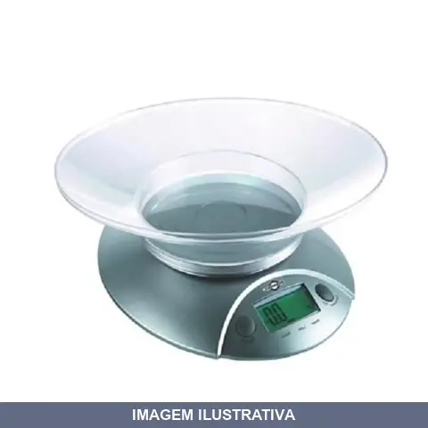
BALANCA COZ DIG BRASFORT
Balança digital para cozinha com capacidade máxima de 5 kg. Visor LCD para leitura de peso. Inclui recipiente removível de plástico. Função tara para zerar o peso do recipiente. Desligamento automático após período de inatividade. Alimentação por pilha. Adequada para pesagem de ingredientes e alimentos em uso doméstico.
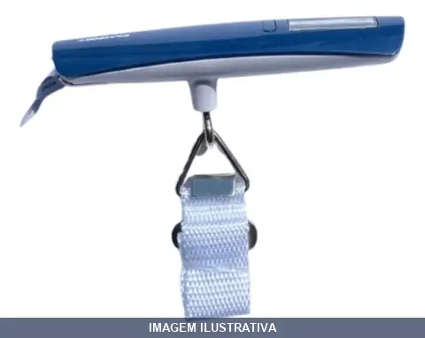
BALANCA DE BAGAGEM DIGITAL BRASFORT
Balança digital portátil para pesagem de bagagens e malas. Possui visor digital para leitura precisa do peso. Indicada para uso doméstico, viagens e pequenos estabelecimentos. Estrutura resistente adequada para suportar o peso máximo especificado. Prática para verificar peso de bagagem antes do embarque e organizar cargas.
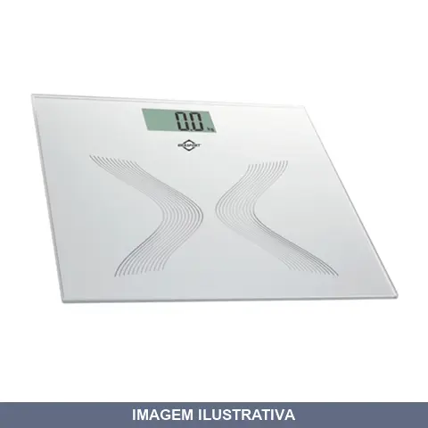
BALANCA PARA BANHEIRO DIGITAL BRASFORT
Balança digital para banheiro com capacidade de até 150kg. Indicada para medir peso corporal em residências. Funciona com tecnologia digital para leitura precisa do peso. Ideal para acompanhamento de peso em casa.
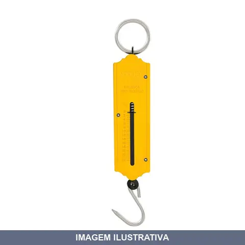
BALANCA TIPO PEIXEIRO VONDER
BALANÇA TIPO PEIXEIRO 25KG VONDER Indicada para pesagem de legumes, frutas, carnes, aves, peixes e mantimentos em geral. Observação: vetado o uso comercial, produto não calibrado, podendo ser utilizado apenas para uso doméstico. Confeccionada em aço carbono e alumínio, proporcionando maior resistência. Acompanha gancho para prender o material ou alimento a ser pesado.
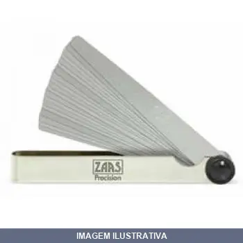
CALIBRE DE FOLGA , ZAAS
CALIBRE DE FOLGA 0,05 A 1,00MM REF 20 LAMINAS Fabricado em aço inox ESPESSURA DAS LAMINAS: 0,05 - 0,10 - 0,15 - 0,20 - 0,25 - 0,30 - 0,35 - 0,40 - 0,45 - 0,50 - 0,55 - 0,60 - 0,65 - 0,65 - 0,70 - 0,75 - 0,80 - 0,85 - 0,90 - 0,95 - 1,00
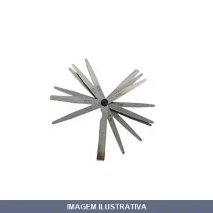
CALIBRE DE FOLGA STARFER
Indicação de Uso: Verificação e ajuste de folgas em trabalhos de mecânica, manutenção e montagem. Material e Resistência: Aço temperado, resistente ao desgaste. Vantagem Prática: Conjunto com 20 peças para diferentes espessuras de folga, facilitando medições precisas em máquinas e equipamentos.
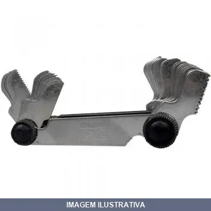
CALIBRE DE ROSCA LAMINAS ZAAS
Ferramenta de medição para verificação e identificação de roscas métricas, Whitworth e BSP. Composto por 58 lâminas especialmente moldadas para uso em qualquer ângulo. Material: aço inox. Cada lâmina possui a medida estampada. Indicado para setores de montagem, manutenção e controle de qualidade em parafusos e porcas.

CANETA DE POLARIDADE VOLTS FG500 KITEST
Indicação de Uso: Teste de polaridade em sistemas elétricos automotivos de 12V e 24V. Verificação de pulsos em injetores e componentes de circuitos veiculares. / Material e Resistência: Cabo polarizado de 3 metros. / Vantagem Prática: Identifica presença e polaridade de tensão nos dois ranges de voltagem, agilizando diagnóstico de falhas elétricas.
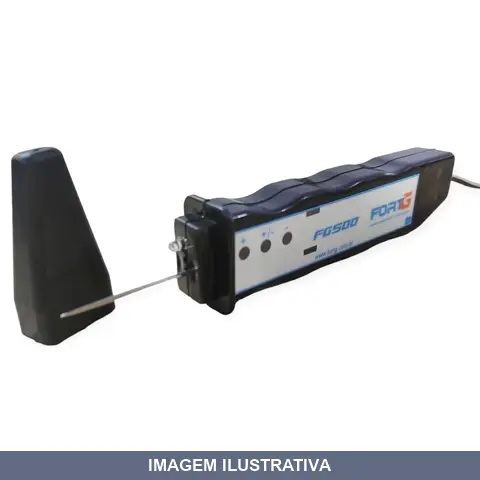
CANETA DE POLARIDADE VOLTS KA-250
Caneta de polaridade para circuitos de corrente contínua. Indicada para testes e verificação de polaridade em sistemas elétricos de 12 e 24 volts. Ferramenta útil para diagnóstico de conexões e troubleshooting de circuitos de baixa tensão em equipamentos automotivos, painéis e instalações industriais.
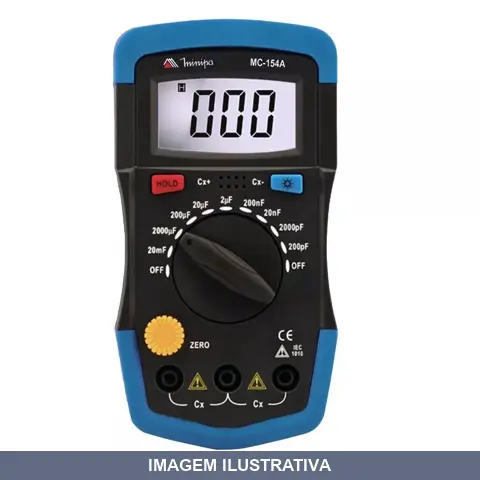
CAPACIMETRO MC- MINIPA
Indicação de Uso: Medição de capacitância em circuitos eletrônicos e componentes elétricos. Material e Resistência: Construção em plástico resistente com proteção interna. Vantagem Prática: Instrumento portátil para diagnóstico e verificação de capacitores em campo.
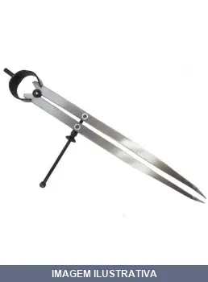
COMPASSO RETO EDA
Indicação de Uso: Traçado e marcação de linhas retas em trabalhos de desenho técnico, projetos e marcenaria. Material e Resistência: Construção em metal com ponta seca para precisão. Vantagem Prática: Permite desenhar linhas retas com facilidade em papel, madeira e outros materiais.
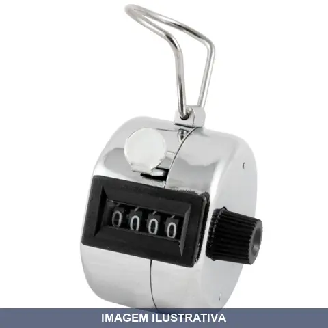
CONTADOR MANUAL DIGITOS NOLL
Contador manual analógico com corpo em ferro cromado resistente. Dispõe de botão frontal para incrementar contagem e botão lateral para zerar o marcador. Equipado com argola para transporte ou fixação. Indicado para ambientes industriais, comerciais e eventos que requeiram registro manual de eventos, pessoas ou produtos.
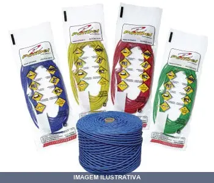
CORDAO PARA PRUMO 10MT POLIBEL
CORDAO PARA PRUMO POLIPEL TRANÇADO COM 10 METROS POLIBEL
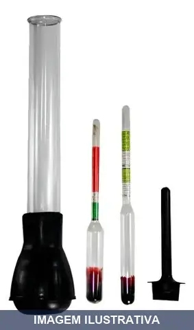
DENSIMETRO PARA TESTAR CAREG BAT WESTERN
Densímetro para teste de carga de bateria. Indicado para verificar o estado de carga e densidade do eletrólito em baterias automotivas. Material resistente adequado para uso em oficinas e manutenção de veículos.
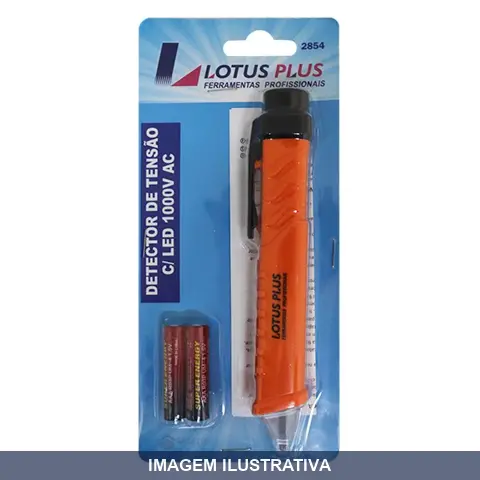
DETECTOR DE TENSAO COM LED PLUS LOTUS
Indicação de Uso: Detector portátil para identificação de presença de tensão elétrica em circuitos e instalações até 1000V. Material e Resistência: Construído com LED indicador luminoso para visualização clara da detecção. Vantagem Prática: Permite verificação rápida e segura de tensão sem contato direto com o circuito.
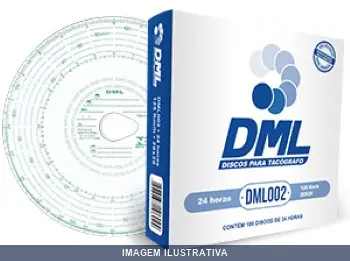
DISCO DIAGRAMA 1D 125KM DML
DISCO DIAGRAMA DIARIO 125KM Discos de Tacógrafos Os discos diagramas para tacógrafos DML são projetados com tecnologia de ponta e obedecem aos padrões internacionais de qualidade. A DML possui a mais completa linha de discos para tacógrafos, produtos esses homologados pelo Inmetro através das Portarias 053, 054 e 109. Os discos DML não desprendem resíduos (não soltam pó), dessa maneira prolongam a vida útil do tacógrafo, não perdendo suas grafias em possíveis contatos com água, óleo ou graxa. Po
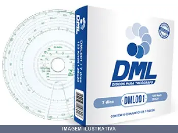
DISCO DIAGRAMA 7D 125KM DML
Disco diagrama semanal para tacógrafo. Indicação de Uso: registro de velocidade, tempo de direção e repouso em veículos comerciais. Material e Resistência: papel especial com revestimento resistente. Vantagem Prática: leitura clara dos dados de circulação veicular.
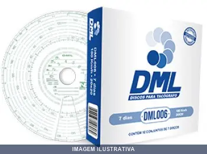
DISCO DIAGRAMA 7D 180KM DML
DISCO DIAGRAMA SEMANAL 180KM Discos de Tacógrafos Os discos diagramas para tacógrafos DML são projetados com tecnologia de ponta e obedecem aos padrões internacionais de qualidade. A DML possui a mais completa linha de discos para tacógrafos, produtos esses homologados pelo Inmetro através das Portarias 053, 054 e 109. Os discos DML não desprendem resíduos (não soltam pó), dessa maneira prolongam a vida útil do tacógrafo, não perdendo suas grafias em possíveis contatos com água, óleo ou graxa. P
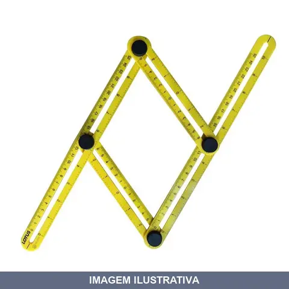
ESQUADRO AJUSTAVEL REGUAS PLUS LOTUS
Indicação de Uso: Esquadro ajustável indicado para traçagem, marcação e verificação de ângulos em trabalhos de carpintaria, marcenaria, metalurgia e construção civil. Material e Resistência: Estrutura composta por quatro réguas articuladas que permite ajuste de ângulos variáveis. Vantagem Prática: Possibilita trabalhar com múltiplos ângulos em um único instrumento, facilitando diferentes aplicações de medição e alinhamento.
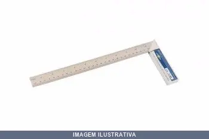
ESQUADRO ALUMINIO BRASFORT
ESQUADRO CABO DE ALUMINIO BRASFORT 08''= 20CM REF: 8555
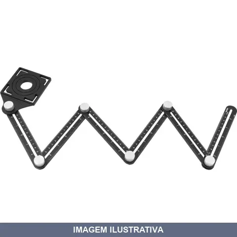
ESQUADRO ARTICULADO VONDER
Indicação de Uso: Traçagem de ângulos e linhas em trabalhos de marcenaria, construção civil, metalurgia e projetos em geral. Material e Resistência: Estrutura em metal com múltiplas posições angulares ajustáveis. Vantagem Prática: Permite marcação rápida de diversos ângulos sem necessidade de transferidor ou cálculos, otimizando o trabalho de precisão em canteiros e oficinas.
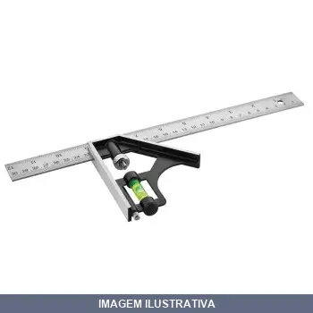
ESQUADRO COMBINADO
Indicação de Uso: Marcações de ângulos retos em ferramentarias, usinagens, indústrias e trabalhos de carpintaria e construção. Exatidão de ± 1°. Material e Resistência: Composição de Plástico ABS e aço inoxidável. Régua deslizante com graduação em mm e polegadas, base com nivelador, riscadora. Vantagem Prática: Combinado para medições de 45º e 90º. Versátil para verificação de ângulos e marcações precisas em diferentes materiais.
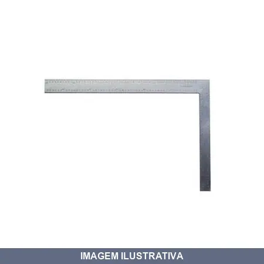
ESQUADRO DE AÇO STANLEY
ESQUADRO DE AÇO PARA CARPINTEIRO 45-600 Revestimento em verniz para evitar corrosão Aço temperado de alta qualidade e longa vida útil Graduações gravadas em baixo relevo em ambos os lados para facilitar a leitura Escala inversa para medições mais eficientes
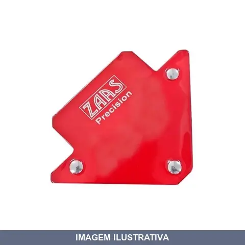
ESQUADRO MAGNETICO ANGULOS , E GRAUS ZAAS
Indicação de Uso: Fixação e alinhamento de peças em trabalhos de soldagem, montagem e construção. Material e Resistência: Construído em aço com propriedades magnéticas, capacidade de retenção de 12kg. Vantagem Prática: Oferece ângulos de 45°, 90° e 135°, permitindo múltiplas posições de trabalho sem necessidade de suportes adicionais.
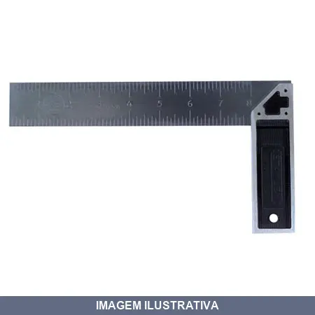
ESQUADRO PROF STANLEY
ESQUADRO PROFISSIONAL - 10" 46-534 Escala em milímeto e polegada, Graduação numérica em baixo relevo Cobertura anticorrosiva na lâmina Cabo em metal, Orifício para armazenagem Calibrado a 90 º e 45 º
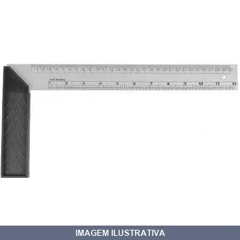
ESQUADRO PVC MONFORT
Indicação de Uso: Ferramenta utilizada em carpintaria e construção para criar e verificar ângulos retos, marcando ângulos de 45 e 90 graus. / Material e Resistência: Construído integralmente em PVC, combinando lâmina e cabo em material plástico resistente. / Vantagem Prática: Design compacto com cabo integrado para manuseio confortável durante trabalhos de medição e marcação.
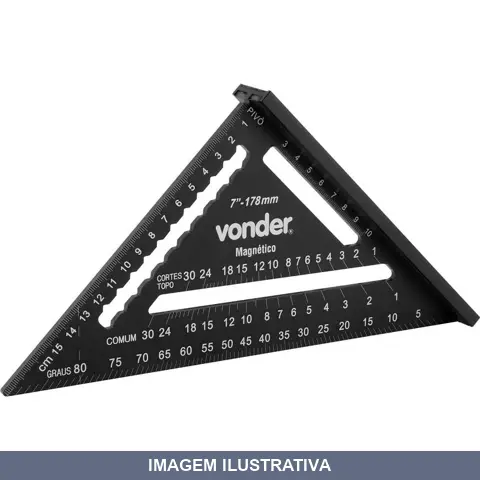
ESQUADRO RAPIDO OU REGUA MULTI ANGULAR VONDER
Indicação de Uso: Traçagem de ângulos e linhas em trabalhos de marcenaria, construção civil, metalurgia e projetos em geral. Material e Resistência: Estrutura em metal com escalas para múltiplos ângulos, graus e cortes impressos na peça. Vantagem Prática: Permite marcação rápida de diversos ângulos sem necessidade de transferidor ou cálculos, otimizando o trabalho de precisão em canteiros e oficinas.
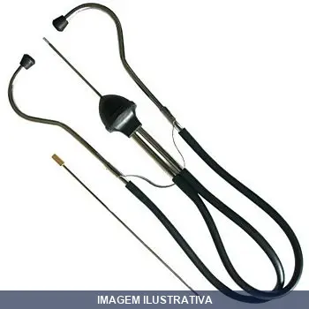
ESTETOSCOPIO PARA MECANICO STANLEY
ESTETOSCOPIO STANLEY PARA MECANICOS Detecta facilmente ruídos problemáticos em motores, transmissões, rolamentos e outras peças móveis • Conta com um sensor de provas e extensão
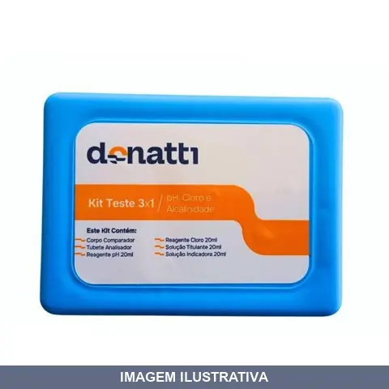
ESTOJO TESTE DONATTI
Indicação de Uso: Análise dos parâmetros de pH, cloro e alcalinidade em água de piscina, permitindo monitoramento regular da qualidade da água. Material e Resistência: Composto por frascos de reagentes específicos, tubo de amostra e instruções de uso para testes precisos. Vantagem Prática: Realiza medições de forma simples e rápida através de escala de cores, mantendo os níveis de pH e cloro em condições ideais para desinfecção e conforto dos banhistas.
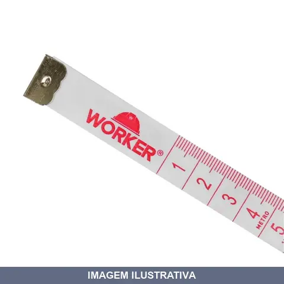
FITA METRICA POLIESTER WORKER
Indicação de Uso: Medições em obras, projetos, construção civil e trabalhos gerais que demandem precisão métrica. Material e Resistência: Fita em poliéster, material resistente e durável para uso profissional. Vantagem Prática: Portabilidade e praticidade para transporte, ideal para profissionais que precisam de ferramenta de medição compacta.

LINHA PED FIO POLIBEL
Indicação de Uso: Fio para alinhamento e marcação em construção civil, alvenaria, agricultura e jardinagem. Material e Resistência: Nylon trançado com alta tenacidade, fornecendo resistência à tração e durabilidade mesmo sob tensão constante. Vantagem Prática: Permite alinhamentos precisos em diversas etapas de obra com visibilidade clara durante o trabalho.
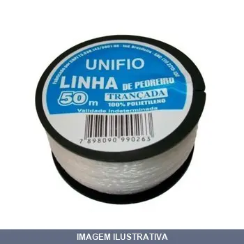
LINHA PED TRANC UNIFIO
Indicação de Uso: Alinhamento e marcação em obras de construção civil, nivelamento de estruturas e demarcações. Material e Resistência: Polietileno trançado na cor branca, flexível e resistente à tração. Vantagem Prática: Formato trançado oferece resistência estrutural e estabilidade para trabalhos de alinhamento e marcação em canteiros de obra.
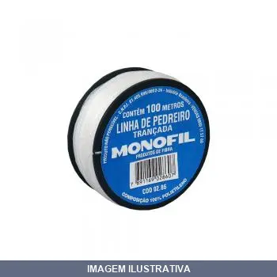
LINHA PED TRANCADA UNIFIO
Indicação de Uso: Demarcação, alinhamento e prumo em obras de alvenaria e construção civil. / Material e Resistência: Linha monofilamento trançada com alta resistência à tração. / Vantagem Prática: Proporciona traçados precisos e duráveis durante execução de trabalhos em pedraria.
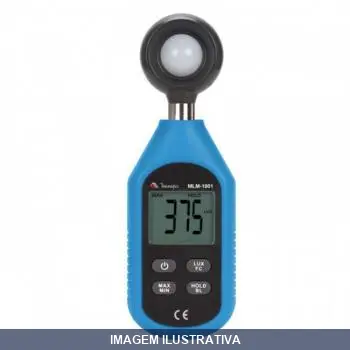
LUXIMETRO MLM- MINIPA
LUXIMETRO DIGITAL O MLM-1001 é um mini-luxímetro digital, seguro e estável. Nivel de Poluição: 2, Segurança: EN61326-1, amplamente usado em projetos de iluminação, agricultura, pecuária animal, mineração, laboratórios, escritório e outros. Nesse manual de operação estão inclusos informações de segurança e avisos
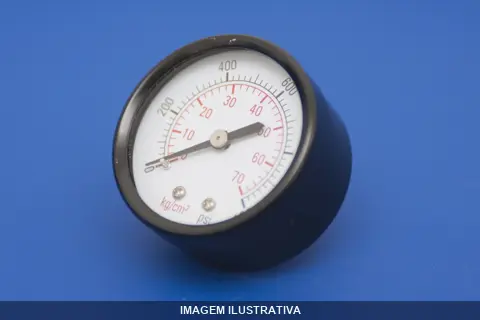
MANOMETRO HORIZONTAL RF 0100 L
Manômetro industrial para refrigeração com montagem horizontal ou vertical. Caixa em aço carbono com acabamento preto (opcionalmente em aço inox). Visor em vidro plano. Soquete, mecanismo e elemento sensor (bourdon) em aço inox. Escalas graduadas em pressão e temperatura. Faixas de pressão de 0,6 a 1.000 bar com opções de rosca ¼", ½", BSP ou NPT.
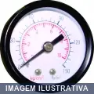
MANOMETRO HORIZONTAL RF 0150 L
MHSP150 MANOMETRO HORIZONTAL SECO PINTADO 150PSI ROSCA 1/4 NPT Manômetro horizontal Diâmetro : 50 mm Rosca macho 1/4" NPT Caixa e capa : aço carbono pintado Visor: policarbonato (acrílico) Sensor: cobre Mecanismo e conexão: latão Escala em PSI e Kg/cm² (BAR)

MANOMETRO HORIZONTAL RF 0200 L
MHSP200- MANOMETRO HORIZONTAL SECO PINTADO 200 PSI ROSCA 1/4 NPT
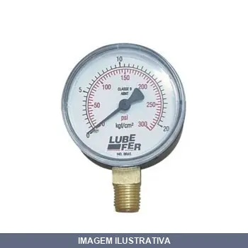
MANOMETRO VERTICAL LBS COM GLICERINA LUBEFER 100 7KG
Indicação de Uso: Para medição de pressão em sistemas de ar comprimido. Material e Resistência: Com glicerina na caixa para amortecer vibrações e flutuações de pressão. Rosca 1/4 NPT. Vantagem Prática: Proporciona leituras precisas e estáveis mesmo em condições de vibração, prolongando a vida útil do manômetro.
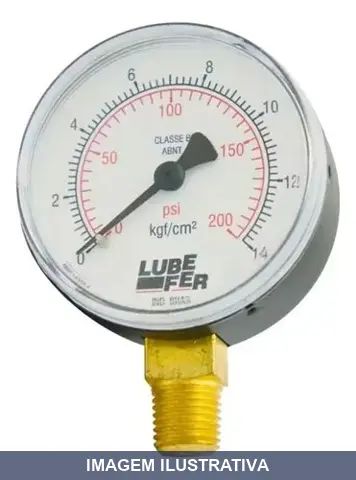
MANOMETRO VERTICAL LBS COM GLICERINA LUBEFER 200 14 KG
Manômetro vertical com capacidade de 200 lbs e 14 kgf/cm², preenchido com glicerina. Indicado para leitura de pressão em sistemas hidráulicos, pneumáticos e de refrigeração. A glicerina reduz vibrações e prolonga a vida útil do equipamento. Aplicável em instalações que demandam medição confiável de pressão.
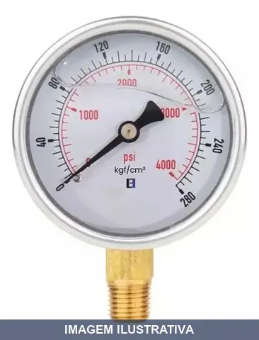
MANOMETRO VERTICAL LBS COM GLICERINA LUBEFER 4000 280 KG
Manômetro vertical com escala de até 4000 LBS (280 KG). Equipado com glicerina para amortecimento de vibrações e maior precisão de leitura. Indicado para medição de pressão em sistemas hidráulicos e pneumáticos em aplicações industriais e de manutenção.
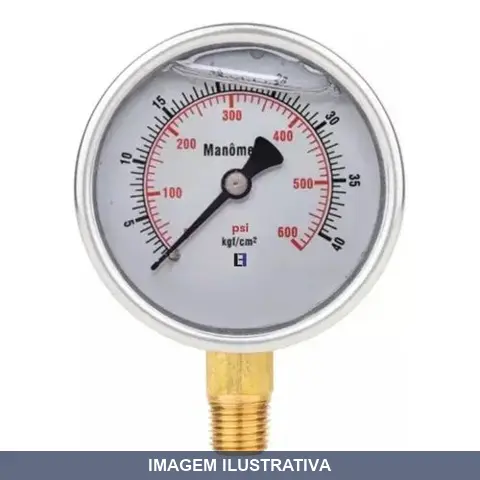
MANOMETRO VERTICAL LBS COM GLICERINA LUBEFER 600 40 KG
Manômetro na posição vertical para medição de pressão até 600 LBS (40 kgf/cm²). Preenchido com glicerina, que oferece proteção contra vibrações e oscilações de pressão. Aplicável em sistemas hidráulicos, pneumáticos e de ar comprimido. Indicado para monitoramento contínuo de pressão em equipamentos industriais, compressores e sistemas de ar.
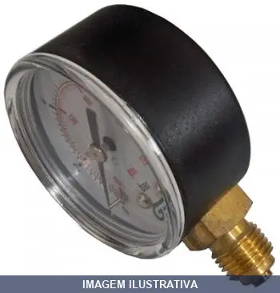
MANOMETRO VERTICAL RF
MVSP100 - MANOMETRO VERTICAL SECO PINTADO 100 PSI ROSCA 1/4 NPT Diâmetro : 50 mm Rosca macho 1/4" NPT Caixa e capa : aço carbono pintado Visor: policarbonato (acrílico) Sensor: cobre Mecanismo e conexão: latão Escala em PSI e Kg/cm² (BAR)
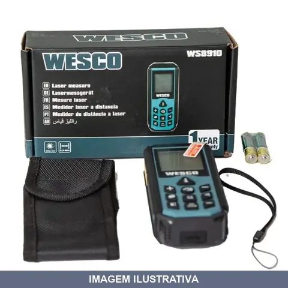
MEDIDOR A LASER WESCO
Indicação de Uso: Medição de distâncias em ambientes internos e externos, ideal para projetos de construção, reforma e acabamento. Material e Resistência: Construção robusta para uso profissional e doméstico. Vantagem Prática: Tecnologia laser proporciona medições precisas e rápidas sem necessidade de fita métrica, facilitando trabalhos em altura e espaços de difícil acesso.
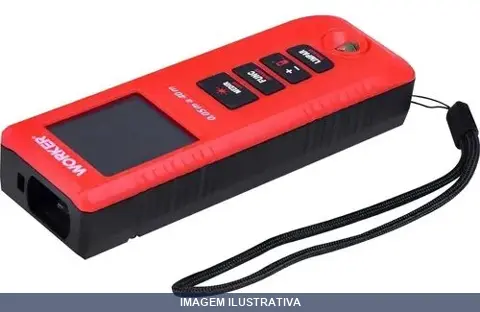
MEDIDOR A LASER WORKER
Indicação de Uso: Medição de distâncias em ambientes internos e externos, ideal para projetos de construção, reforma e acabamento. Material e Resistência: Construção robusta para uso profissional e doméstico. Vantagem Prática: Tecnologia laser proporciona medições precisas e rápidas sem necessidade de fita métrica, facilitando trabalhos em altura e espaços de difícil acesso.
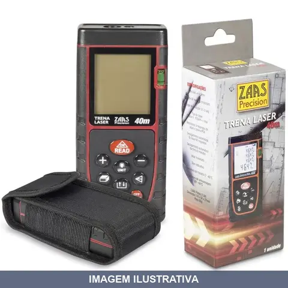
MEDIDOR A LASER ZAAS
Medidor a laser para medições de distância e comprimento. Indicado para trabalhos de construção, reforma, decoração e projetos que exigem precisão em medições. Utiliza tecnologia laser para capturar medidas de forma rápida e prática, eliminando necessidade de fita métrica em muitos casos.
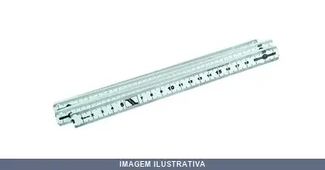
METRO NYLON ECO
Indicação de Uso: Medição em ambientes internos e externos, ideal para profissionais e uso geral. Material e Resistência: Fabricado em nylon resistente, com mola dobrável para uso em superfícies molhadas ou abrasivas. Escala em milímetros com 5 dobras por metro. Vantagem Prática: Fácil visualização com cores vibrantes, design simples e prático, facilita a medição precisa em diversas situações.
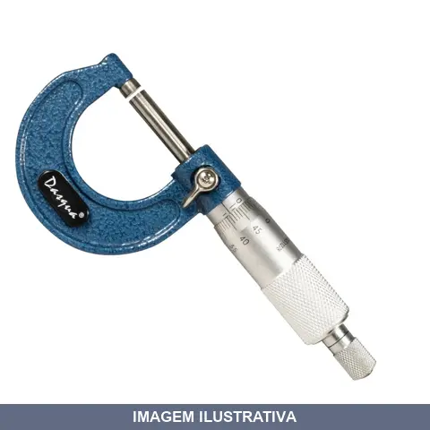
MICROMETRO EXTERNO ANALOGICO - DASQUA
Indicação de Uso: Instrumento de medição para trabalhos de precisão em usinagem, mecânica e controle dimensional. Material e Resistência: Construção em metal para durabilidade em ambiente industrial. Vantagem Prática: Leitura direta no mostrador analógico, sem necessidade de bateria ou fonte de energia.
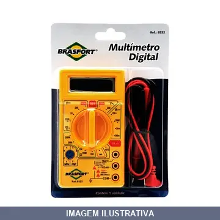
MULTIMETRO DIGITAL BRASFORT
MULTIMETRO DIGITAL BRASFORT PROFISSIONAL REF: 8522 - Multímetro com visor em cristal líquido (LCD), 0,5” de altura e 3 1/2 dígitos. – Medições de tensão contínua e alternada, corrente contínua, resistor, transistores e diodos. – Ideal para laboratórios, oficinas, bricolagem e uso doméstico.
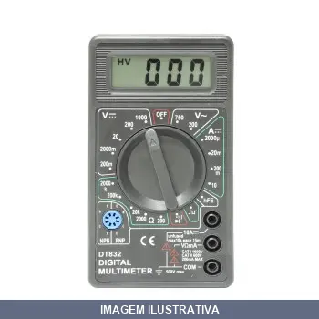
MULTIMETRO DIGITAL DT832 NOLL
MULTÍMETRO DIGITAL REF DT832 Multímetro Digital Display: Cristal Líquido (LCD) de 3 1/2 dígitos Tensão DC: 200mV, 2000mV, 20V, 200V, 1000V -Precisão: ± 0.5% da leitura + 2 dígitos Tensão AC: 200V, 750V -Precisão: ± 1.2% da leitura + 10 dígitos Corrente DC: 2000µA, 20mA, 200mA, 10A -Precisão: ± 1.2% da leitura + 2 dígitos Resistencia: 200O, 2KO, 20KO, 200KO, 2MO -Precisão: ± 0.8% da leitura + 2 dígitos Teste de Diodo e Transistor (hFE) Teste de Continuidade / Buzina Saída de Onda Quadrada Aliment
MULTIMETRO DIGITAL ET- MINIPA 1002
Multímetro digital para medição de grandezas elétricas em circuitos e equipamentos. Indicado para diagnóstico, manutenção e testes em instalações elétricas, controle de painéis e verificação de componentes. Realiza leituras de tensão, corrente e resistência elétrica. Permite análises rápidas em campo sem desconexão de circuitos.
MULTIMETRO DIGITAL ET- MINIPA 1505
Multímetro digital para medição de tensão, corrente e resistência elétrica. Indicado para diagnóstico e teste de circuitos elétricos, continuidade e componentes eletrônicos. Construção em plástico resistente com display digital para leitura de valores.
MULTIMETRO DIGITAL ET- MINIPA 2030A
ET-2030A MULTIMETRO DIGITAL 3 1/2D-20MOHMS-20A Os multímetros digitais possuem uma grande precisão e agilidade nas leituras efetuadas, além de terem acopladas outras funções e filtros necessários para uma ampla gama de aplicações, sem a necessidade de se utilizar diversos equipamentos diferentes. Display LCD/Contagem 3 1/2 Dígitos/2000 Iluminac¸a~o/Barra Gra´fica - Tensa~o DC 2/20/200/1000V Tensão AC 200/750V Corrente DC 2m/20m/200m/20A Resistência 2k/20k/200k/2M/20MO Mudança de Faixa Manual Pre
MULTIMETRO DIGITAL PLUS LOTUS
Multímetro digital para medição de tensão DC e AC, corrente e resistência. Equipado com sinal sonoro para teste de continuidade, diodos e transistores. Alimentado por bateria 9V. Indicação de Uso: Manutenção e diagnóstico de circuitos elétricos e eletrônicos. Vantagem Prática: Display digital com leitura clara para profissionais e técnicos em instalações e reparos.

NIVEL ALUMINIO
Indicação de Uso: Nivelação e alinhamento em trabalhos de carpintaria, alvenaria, hidráulica e construção em geral. Material e Resistência: Corpo em alumínio com estrutura em forma de I, reforçada com protetores plásticos nas extremidades. Bolhas 25% maiores com clareza aprimorada e amareladas para visualização. Vantagem Prática: Design Top Read com abertura superior para leitura de 270°. Três bolhas (0°, 45° e 90°). Borda para tubulação permite uso em superfícies curvas. Orifício para
NIVEL ALUMINIO BOLHAS PLUS LOTUS 12POL 3
Indicação de Uso: Construção civil, carpintaria, marcenaria, instalação de azulejos e alvenaria para verificar se planos estão horizontais, verticais ou inclinados. Material e Resistência: Régua de alumínio reforçado, resistente à corrosão, com 3 bolhas para medições precisas. Escala em milímetros e polegadas. Pontas protegidas para absorção de impactos. Vantagem Prática: Dois orifícios para pendurar. Medições em ângulos de 90 graus. Facilita nivelamento e alinhamento de superfícies.
NIVEL ALUMINIO BOLHAS PLUS LOTUS 16POL 3
Indicação de Uso: Construção civil, carpintaria, marcenaria, instalação de azulejos e alvenaria para verificar se planos estão horizontais, verticais ou inclinados. Material e Resistência: Régua de alumínio reforçado, resistente à corrosão, com 3 bolhas para medições precisas. Escala em milímetros e polegadas. Pontas protegidas para absorção de impactos. Vantagem Prática: Dois orifícios para pendurar. Medições em ângulos de 90 graus. Facilita nivelamento e alinhamento de superfícies.
NIVEL ALUMINIO BOLHAS PLUS LOTUS 20POL 3
Indicação de Uso: Construção civil, carpintaria, marcenaria, instalação de azulejos e alvenaria para verificar se planos estão horizontais, verticais ou inclinados. Material e Resistência: Régua de alumínio reforçado, resistente à corrosão, com 3 bolhas para medições precisas. Escala em milímetros e polegadas. Pontas protegidas para absorção de impactos. Vantagem Prática: Dois orifícios para pendurar. Medições em ângulos de 90 graus. Facilita nivelamento e alinhamento de superfícies.

NIVEL ALUMINIO BOLHAS PLUS LOTUS 36POL 3
Indicação de Uso: Construção civil, carpintaria, marcenaria, instalação de azulejos e alvenaria para verificar se planos estão horizontais, verticais ou inclinados. Material e Resistência: Régua de alumínio reforçado, resistente à corrosão, com 3 bolhas para medições precisas. Escala em milímetros e polegadas. Pontas protegidas para absorção de impactos. Vantagem Prática: Dois orifícios para pendurar. Medições em ângulos de 90 graus. Facilita nivelamento e alinhamento de superfícies.
NIVEL ALUMINIO COM IMA ZAAS
Nível em alumínio extrudado de alta resistência com imã integrado na base prismática para fixação em superfícies metálicas. Possui duas bolhas: uma principal e uma auxiliar transversal. Indicado para alinhamentos e nivelamentos em tubulações, estruturas e máquinas.
NIVEL ALUMINIO MAGNETICO PLUS LOTUS
Nível com corpo em alumínio reforçado, resistente à corrosão. Possui base magnética para fixação em superfícies metálicas. Bolhas com visão de 360° para medições em posição horizontal e vertical. Pintura em epóxi. Escala em milímetros e polegadas.
NIVEL ALUMINIO STANLEY
Indicação de Uso: Nivelação e alinhamento em trabalhos gerais de construção, carpintaria e acabamentos. Material e Resistência: Construção em alumínio com estrutura em forma de I, durável e leve. Três vials de acrílico para leitura de nível, prumo e 45 graus. Vantagem Prática: Burbuja superior (Top Read) para visibilidade. Revestimento amarelo nos vials. Furos de suspensão para armazenamento. Protetores de borracha nos extremos.
NIVEL ALUMINIO ZAAS
Indicação de Uso: Nivelamento em construções, reformas e alinhamentos diversos em superfícies e estruturas. Material e Resistência: Alumínio extrudado de alta resistência com perfil reforçado em viga I e base prismática. Vantagem Prática: Bolhas calibradas (horizontal e vertical) para medições precisas; alguns modelos dispõem de base magnética para fixação em superfícies metálicas.
NIVEL LASER BOLHAS FLEX LOTUS
Nível laser com projeção de linha em cruz para alinhamento horizontal e vertical de precisão. Estrutura flexível adaptável a diferentes superfícies e ângulos de trabalho. Indicado para alvenaria, carpintaria, instalações hidráulicas e elétricas. Oferece melhor rapidez e exatidão no posicionamento de estruturas e equipamentos em canteiros de obra.
PAQUIMETRO AÇO BRASFORT
PAQUIMETRO BRASFORT ACO 150 X 0,02MM REF: 8069 Descrição do produto - Precisão de 0,02 mm
PAQUIMETRO AÇO DIGITAL
PAQUIMETRO DIGITAL 150MM Fabricado em aço inoxidável. Efetua medidas em milímetros e em polegadas. Vem acondicionado em estojo para maior proteção. Display em LCD. Dígitos de 11 mm de altura facilitando a leitura. Facilidade de acesso ao compartimento da bateria. Bateria não incluída. Indicação de bateria com carga baixa (dígitos piscando). Leituras 0,01 mm / 0,005 “.
PAQUIMETRO AÇO INOX - LOTUS
Indicação de Uso: Instrumento de medição de dimensões externas, internas e profundidade em peças e componentes. Material e Resistência: Fabricado em aço inoxidável, resistente à corrosão e oxidação. Vantagem Prática: Construção durável apropriada para ambientes úmidos e uso contínuo em oficinas e indústrias.
PAQUIMETRO AÇO STANLEY
Indicação de Uso: Medições internas, externas, de passo e profundidade. Material e Resistência: Construído em aço resistente. Vantagem Prática: Instrumento de precisão com acabamento cromado, acompanhado de estojo para armazenagem e proteção.
PAQUIMETRO FIBRA DE CARBONO DIGITAL ZAAS
Paquímetro universal digital com corpo em fibra de carbono. Capacidade de medição até 150mm com resolução de 0,01mm e exatidão de ±0,02mm. Apresenta display digital com dígitos grandes para leitura facilitada, botão de ajuste para zero em qualquer posição do cursor, e seletor rápido milímetro/polegada. Alimentado por bateria CR-2032 com desligamento automático após 5 minutos sem uso. Produto leve e resistente, ideal para medições externas, internas e de profundidade.
PAQUIMETRO PLASTICO BRASFORT
Paquímetro de material plástico indicado para medições em trabalhos de marcenaria, metalurgia, construção e precisão geral. Construído em plástico, oferece leveza e facilidade de manuseio. Prático para uso em oficinas, canteiros e ambientes onde a portabilidade é importante.
PLUVIOMETRO LISO MULTITEC
Indicação de Uso: Medição de precipitação pluviométrica em estações meteorológicas e sistemas de monitoramento climático. Material e Resistência: Construção lisa para facilitar escoamento de água e limpeza. Vantagem Prática: Coleta e mensuração de dados de chuva para análise climatológica e hidrológica.
PONTA DE PROVA BRASFORT
Indicação de Uso: Ferramenta de medição e diagnóstico para circuitos elétricos, usada em testes e verificações de continuidade e tensão. Material e Resistência: Construída com ponta metálica condutora acoplada a cabo isolante, apropriada para uso em instalações elétricas. Vantagem Prática: Permite acesso seguro a pontos de teste em circuitos, facilitando diagnósticos elétricos e identificação de falhas.
PONTA DE PROVA PARA MULTIMETRO MTL- MINIPA
MTL-1 PONTA DE PROVA(Básica/Eletrônica) A Ponta de Prova é um acessório utilizado juntamente a multímetros, amperímetros, e instrumentos de medição em geral analógicas ou digitais, que possuam terminais de entrada tipo banana. Revestimento do Cabo Silicone de Alta Flexibilidade Isolação 1000V AC/DC Dupla Corrente Máxima 15A nominal (Máximo 20A/30seg.) Resistência da Ponta <0,06O (Cada ponta) Ideal para: Eletrônica em bancada, manutenções leves e uso geral. Segurança CAT III 1000V/CAT IV 600V Co
PONTA DE PROVA PARA MULTIMITRO MTL- MINIPA
MTL-7 PONTA DE PROVA (Superior/Industrial) A Ponta de Prova MTL-7 Minipa é um acessório utilizado juntamente a multímetros, amperímetros, e instrumentos de medição em geral analógicas ou digitais. -Mais segura, geralmente CAT III 1000V e CAT IV 600V. - Padrão de conexão: banana 4 mm com isolação completa - Revestimento do cabo: silicone de alta flexibilidade - Isolação: 1000V AC/DC Dupla - Corrente Máxima: 15A nominal (Máximo 20A/30seg) -Ideal para: Eletricistas e técnicos de manutenção indus
PROFUNDIMETRO REF MF25 RF
Indicação de Uso: Medição de profundidade em furos, cavidades e superfícies em trabalhos de marcenaria, metalurgia e construção. Material e Resistência: Construído em metal, resistente ao uso contínuo. Vantagem Prática: Proporciona leituras precisas de profundidade, facilitando trabalhos que exigem dimensionamento exato.
PRUMO CENTRO 300GR VONDER
PRUMO DE CENTRO METAL 300G VONDER IMP Indicado para nivelamento de paredes e estruturas
PRUMO CENTRO LOTUS
Prumo de centro cônico produzido em aço carbono forjado e temperado com pintura eletrostática. Peso de 400g com corda em poliamida de alta resistência. Calço guia de aço super reforçado. Indicado para detectar ou conferir a vertical e elevar o ponto em trabalhos de construção.
PRUMO CENTRO VONDER
Indicação de Uso: Prumo de centro para verificação de verticalidade em paredes, estruturas e alinhamentos / Material e Resistência: Construído em metal com peso balanceado / Vantagem Prática: Proporciona precisão em trabalhos de nivelamento e alinhamento vertical em construção e acabamento
![PRUMO PAREDE LOTUS 200G [020694]](fotos/020694.webp)
PRUMO PAREDE LOTUS 200G [020694]
Indicação de Uso: Ferramenta para verificação de prumo e alinhamento vertical em trabalhos de construção e alvenaria. Material e Resistência: Construído em material resistente, apropriado para uso profissional. Vantagem Prática: Proporciona precisão no nivelamento vertical de paredes e estruturas durante execução de obras.
PRUMO PAREDE LOTUS 300G [020695]
Indicação de Uso: Ferramenta para verificação de verticalidade e prumo em trabalhos de alvenaria, construção e acabamento. Material e Resistência: Estrutura em material resistente com peso de 300g. Vantagem Prática: Facilita o alinhamento vertical de paredes e superfícies durante a execução de obras e serviços de construção civil.
![PRUMO PAREDE LOTUS 400G [020696]](fotos/020696.webp)
PRUMO PAREDE LOTUS 400G [020696]
Indicação de Uso: Ferramenta de alinhamento e nivelamento para trabalhos em alvenaria, construção e acabamento de paredes. Material e Resistência: Construído em material resistente, adequado para uso profissional e doméstico. Vantagem Prática: Permite verificar o prumo vertical das superfícies com precisão, facilitando o alinhamento correto de estruturas.
PRUMO PAREDE VONDER 300G [021654]
PRUMO DE PAREDE PLASTICO 300G VONDER Indicado para nivelamento de paredes e estruturas
![PRUMO PAREDE VONDER 500G [023170]](fotos/023170.webp)
PRUMO PAREDE VONDER 500G [023170]
PRUMO DE PAREDE METAL 500G VONDER Indicado para nivelamento de paredes e estruturas
PRUMO PAREDE VONDER 700G [021663]
PRUMO DE PAREDE METAL 700G VONDER Indicado para nivelamento de paredes e estruturas
REGUA ACRILICA
Régua em acrílico cristal transparente incolor com bordas chanfradas e escalas de precisão em milímetros. Indicada para uso artístico, técnico ou profissional. Material acrílico oferece polimento fino e resistência para traçados precisos.
REGUA ALUMINIO 02MT WORKER
Indicação de Uso: Régua para medição, marcação e verificação em trabalhos de construção, reforma e projetos diversos. Material e Resistência: Fabricada em alumínio, oferece leveza e resistência à corrosão. Vantagem Prática: Fácil transporte e manuseio, ideal para canteiros de obra e ambientes internos e externos.

REGUA ALUMINIO 03MT WORKER
Indicação de Uso: Régua para pedreiro indicada para alinhamento e acabamento de superfícies após reboco em construção civil e obras em geral. Material e Resistência: Estrutura em alumínio, leve e durável, resistente à umidade e corrosão. Vantagem Prática: Proporciona ótimo acabamento e facilita medições precisas.
REGUA AÇO INOX BRASFORTE 100CM 8664
Indicação de Uso: Ferramenta de medição com escala em milímetros e polegadas, utilizada em marcenaria, construção civil, indústrias e desenho técnico. Pode ser utilizada como apoio e guia de ferramentas cortantes. Material e Resistência: Fabricada em aço inoxidável, com graduação em baixo relevo que oferece durabilidade e precisão. Material resistente à corrosão e ao desgaste. Vantagem Prática: Marcações claras e fáceis de ler facilitam medições exatas. Design leve e compacto permite
REGUA AÇO INOX BRASFORTE 30CM 8662
Indicação de Uso: Ferramenta de medição com escala em milímetros e polegadas, utilizada em marcenaria, construção civil, indústrias e desenho técnico. Pode ser utilizada como apoio e guia de ferramentas cortantes. Material e Resistência: Fabricada em aço inoxidável, com graduação em baixo relevo que oferece durabilidade e precisão. Material resistente à corrosão e ao desgaste. Vantagem Prática: Marcações claras e fáceis de ler facilitam medições exatas. Design leve e compacto permite
REGUA AÇO INOX BRASFORTE 60CM 8663
Indicação de Uso: Ferramenta de medição com escala em milímetros e polegadas, utilizada em marcenaria, construção civil, indústrias e desenho técnico. Pode ser utilizada como apoio e guia de ferramentas cortantes. Material e Resistência: Fabricada em aço inoxidável, com graduação em baixo relevo que oferece durabilidade e precisão. Material resistente à corrosão e ao desgaste. Vantagem Prática: Marcações claras e fáceis de ler facilitam medições exatas. Design leve e compacto permite
REGUA PARA MEDICAO DE TANQUE MT COM VALVULA
Indicação de Uso: Equipamento para medição do nível de combustível em tanques de armazenamento subterrâneo. / Material e Resistência: Alumínio com válvula integrada. / Vantagem Prática: Permite leitura precisa do volume armazenado, facilitando controle de estoque e reabastecimento.
RELOGIO COMPARADOR ZAAS
Relógio comparador analógico para medição de precisão. Indicado para verificação dimensional, controle de tolerâncias e inspeção de peças em trabalhos de usinagem, mecânica e ajustagem. Possui mostrador com graduação em milímetros e centésimos de milímetro, permitindo leituras diretas e comparativas. Construído em metal com mecanismo de engrenagens internas. Ferramenta essencial para profissionais que necessitam de medições exatas e repetitivas em processos industriais e de manutenção.
SUPORTE MAGNET PARA REL.COMPARADOR E APALPADOR ZAAS
Instrumento auxiliar para fixação de relógio comparador e apalpador em superfícies planas e cilíndricas. Fabricado em ferro fundido, aço, imã e plástico. Possui ajuste fino, força magnética de 60kg, chave liga/desliga e bloco em V para fixação em peças cilíndricas. Adequado para medições de superfícies.
SUTA BRASFORT
SUTA 8'' 200MM Revestimento em verniz para evitar corrosão
TERMOMETRO INFRAVERMELHO MT- MINIPA
MT-320 TERMOMETRO DIGITAL MIRA LASER Destinado às aplicações que requerem medidas de temperatura sem contato, como em locais de difícil acesso, pontos energizados, com altas temperaturas, em peças ou partes em movimento. Apresenta resposta rápida, de forma prática e conveniente, com auxílio da mira laser para identificação do local de medida. Sistema de Medição Infravermelho Display LCD 3 1/2 Dígitos Faixas de Medição (Infravermelho) -20~400ºC/-4~752ºF Resolução (0,1ºC/0,1ºF) Máx./Mín./Méd./Má

TESTADOR A NOLL
Indicação de Uso: Testador de tensão elétrica para verificação de voltagem em circuitos, instalações e equipamentos elétricos na faixa de 100V a 500V. Material e Resistência: Construído para resistir ao uso contínuo em ambientes de trabalho. Vantagem Prática: Permite identificar presença de tensão e detectar falhas em instalações elétricas com segurança.
TESTADOR A STANLEY
Indicação de Uso: Testador de tensão elétrica para verificação de presença de corrente em circuitos de 100V a 500V. / Material e Resistência: Construção robusta adequada para uso profissional em instalações elétricas. / Vantagem Prática: Ferramenta essencial para diagnóstico rápido de tensão em sistemas elétricos, proporcionando segurança ao eletricista durante manutenção e instalação.
TESTADOR DE CABO RJ11 E RJ45 HTC31 HIKARI
Indicação de Uso: Testador desenvolvido para verificar conexões RJ45 em redes de banda larga e RJ11 em instalações telefônicas. Identifica curto-circuito, circuito aberto e problemas de conexão. Material e Resistência: Funciona com bateria 9V. Temperatura de operação entre 0°C e 50°C. Vantagem Prática: Teste em velocidade normal ou lenta. Indicadores de conexão por LEDs. Compacto e portátil para uso em bancada ou campo.
TESTADOR DIGITAL A.SANT
Indicação de Uso: Testador digital para verificação de circuitos e continuidade elétrica em instalações e equipamentos. Material e Resistência: Carcaça plástica com componentes eletrônicos internos. Vantagem Prática: Identifica presença de corrente e falhas em circuitos de até 10A, facilitando diagnósticos em manutenção elétrica.
TESTADOR EM .SANTOS
Testador de voltagem com função 3 em 1, indicado para verificação de presença de corrente elétrica em tomadas, fios e cabos. Permite identificar risco ao trabalhar com sistemas elétricos. Fornece resultado instantâneo, sendo ferramenta prática para manutenções elétricas eficientes.
TESTADOR EZPHASE II MINIPA
EZ PHASE II DETECTOR DE SEQUENCIA DE FASE Prático, seguro, rápido e preciso na identificação de sequência de fase trifásica, detecção de tensão e localização/rastreamento de cabos energizados com indicação sonoro e luminosa em três cores diferentes sem contato elétrico. Tensão AC 90~1000V - Categoria de Segurança CAT IV 1000V Alimentação 2x1,5V AAA Dimensões (mm)/Peso (g) 160x20x20/55
TESTADOR GR INTERNEED
Testador destinado a verificação e diagnóstico de circuitos elétricos e componentes. Aplicável em manutenção elétrica, instalações prediais e industrial. Facilita identificação de continuidade e falhas em sistemas elétricos.
TESTE DE BATERIA E FUNC. DO ALT. 500A A FG037 FORTGPRO
Teste de bateria e alternador automotivo para avaliar baterias entre 6V a 12V (500A). Realiza teste do sistema de carga e de estado do motor de partida. Possui compensação de temperatura, sistema de localização de células ruins, construção em aço com garras isoladas. Não produz faíscas, som ou descarga a bateria. Aplicável em carros, vans, motos, RVs e veículos agrícolas, com visor de fácil leitura.
TRANSFERIDOR DE GRAU 180O ZAAS
TRANSFERIDOR DE GRAU 180º ESCALA 100MM Fabricado em Aço Inox Comprimento Total da Regua (mm): 200 Escala (mm): 100
TRENA AÇO EMBORRACHADA ALLFLEX INDUSAT
Indicação de Uso: Ferramenta essencial para medições em construção e reforma, com capacidade de leitura em sistemas métrico e imperial. Material e Resistência: Fita de aço com revestimento emborrachado que oferece durabilidade e resistência ao uso intenso. Ponta imantada facilita fixação em superfícies metálicas. Vantagem Prática: Marcações claras em centímetros e polegadas permitem leituras precisas em qualquer sistema de medição.
TRENA AÇO EMBORRACHADA BRASFORT 03M 7758
Indicação de Uso: Medição de comprimentos em diversas superfícies e ambientes. Material e Resistência: Corpo em plástico ABS com capa emborrachada; fita de aço com pintura em epoxi e acabamento fosco anti-reflexo. Vantagem Prática: Sistema auto trava para fixação segura das medições; ponta imantada para aderência em superfícies metálicas; graduação em polegadas e centímetros; inclui cordão de tecido para transporte.
TRENA AÇO EMBORRACHADA BRASFORT 05M 7754
Indicação de Uso: Medição de comprimentos em diversas superfícies e ambientes. Material e Resistência: Corpo em plástico ABS com capa emborrachada; fita de aço com pintura em epoxi e acabamento fosco anti-reflexo. Vantagem Prática: Sistema auto trava para fixação segura das medições; ponta imantada para aderência em superfícies metálicas; graduação em polegadas e centímetros; inclui cordão de tecido para transporte.
TRENA AÇO EMBORRACHADA BRASFORT 10M 7757
Indicação de Uso: Medição de comprimentos em diversas superfícies e ambientes. Material e Resistência: Corpo em plástico ABS com capa emborrachada; fita de aço com pintura em epoxi e acabamento fosco anti-reflexo. Vantagem Prática: Sistema auto trava para fixação segura das medições; ponta imantada para aderência em superfícies metálicas; graduação em polegadas e centímetros; inclui cordão de tecido para transporte.
TRENA AÇO EMBORRACHADA PLUS LOTUS 03M
Indicação de Uso: Medições e marcações em obras, reformas, construção civil e projetos diversos. Material e Resistência: Fita de aço com revestimento em borracha para proteção e durabilidade. Vantagem Prática: A cobertura emborrachada oferece aderência ao manuseio e proteção contra impactos.
TRENA AÇO EMBORRACHADA PLUS LOTUS 05M
Indicação de Uso: Medição e marcação em obras, projetos de construção, reformas e serviços gerais. Material e Resistência: Fita de aço com revestimento emborrachado que proporciona proteção contra impactos e aderência. Vantagem Prática: Revestimento emborrachado reduz danos ao produto e facilita o manuseio com segurança.
TRENA AÇO EMBORRACHADA PLUS LOTUS 07.5M
Indicação de Uso: Medição e marcação em trabalhos de construção, reforma, marcenaria e projetos em geral. Material e Resistência: Fita em aço com revestimento de borracha, construção robusta para uso profissional e doméstico. Vantagem Prática: Revestimento emborrachado oferece proteção e aderência ao manuseio.
TRENA AÇO EMBORRACHADA PLUS LOTUS 10M
Indicação de Uso: Medições e marcações em obras, reformas, projetos e trabalhos gerais que exigem precisão. Material e Resistência: Lâmina de aço com revestimento emborrachado que oferece proteção e durabilidade. Vantagem Prática: A cobertura emborrachada proporciona aderência e proteção contra impactos.
TRENA AÇO STANLEY 03M [000391]
TRENA BÁSICA COM FREIO MANUAL - 1/2" 3 METROS STHT30204-840 30-486S Caixa anatômica que oferece mais comodidade Fita revestida com polímero de longa duração para maior resistência e vida útil da trena Ponta com 3 grampos Trena com botão de trava Gancho zero absoluto para medições internas e externas
TRENA AÇO STANLEY 05M [001642]
TRENA BASICA STANLEY 5 METROS Caixa anatômica que oferece mais comodidade Fita revestida com polímero de longa duração para maior resistência e vida útil da trena Ponta com 3 grampos Trena com botão de trava Gancho zero absoluto para medições internas e externas
TRENA AÇO STANLEY 08M [001210]
8 METROS TRENA BASICA COM FREIO MANUAL REF: STHT33994-840 TRENA GLOBAL PLUS 8M TRENA BÁSICA - Caixa anatômica que oferece mais comodidade Fita revestida com polímero de longa duração para maior resistência e vida útil da trena Ponta com 3 grampos Trena com botão de trava Gancho zero absoluto para medições internas e externas
TRENA AÇO STARRETT 01M [014492]
Indicação de Uso: Profissional para marcenarias, carpintarias, construção civil e instalações em geral. Material e Resistência: Fita de aço com caixa de plástico ABS de alto impacto. Números impressos em uma única cor para máxima visibilidade. Vantagem Prática: Mecanismo de retração eficiente, design ergonômico e fácil manuseio para medições precisas e confiáveis.
![TRENA AÇO STARRETT 03M [011717]](fotos/011717.webp)
TRENA AÇO STARRETT 03M [011717]
TRENA DE SOLSO MODELO: STARRETT 3 METROS- 10'' A nova linha de trenas da Starrett®, Série TS, foi desenvolvida trazendo a mais alta tecnologia e durabilidade que só as trenas Starrett® podem oferecer. É a solução ideal para quem busca o melhor custo-benefício! Características: Design anatômico. Caixa mais resistente em caso de queda. 4 tamanhos disponíveis: 3, 5, 8 e 10 metros. Graduação só em milímetros e milímetros e polegadas.
TRENA AÇO STARRETT 05M [001807]
TRENA DE BOLSO MODELO: STARRETT 5 METROS- 16'' A nova linha de trenas da Starrett®, Série TS, foi desenvolvida trazendo a mais alta tecnologia e durabilidade que só as trenas Starrett® podem oferecer. É a solução ideal para quem busca o melhor custo-benefício! Características: Design anatômico. Caixa mais resistente em caso de queda. 4 tamanhos disponíveis: 3, 5, 8 e 10 metros. Graduação só em milímetros e milímetros e polegadas.
TRENA AÇO STARRETT 08M [013853]
Indicação de Uso: Profissional para marcenarias, carpintarias, construção civil e instalações em geral. Material e Resistência: Fita de aço com caixa de plástico ABS de alto impacto. Números impressos em uma única cor para máxima visibilidade. Vantagem Prática: Mecanismo de retração eficiente, design ergonômico e fácil manuseio para medições precisas e confiáveis.
![TRENA AÇO STARRETT 10M [011718]](fotos/011718.webp)
TRENA AÇO STARRETT 10M [011718]
TRENA DE BOLSO MODELO: STARRETT 10 METROS- 33'' A nova linha de trenas da Starrett®, Série TS, foi desenvolvida trazendo a mais alta tecnologia e durabilidade que só as trenas Starrett® podem oferecer. É a solução ideal para quem busca o melhor custo-benefício! Características: Design anatômico. Caixa mais resistente em caso de queda. 4 tamanhos disponíveis: 3, 5, 8 e 10 metros. Graduação só em milímetros e milímetros e polegadas.
TRENA DE RODA MEDIDOR DE DISTANCIA DIGITOS
MEDIDOR TOTALIZADSOR DISTANCIA COM RODA 5 DIGITAL VONDER Indicado para medições em superfícies planas sem ressaltos ou irregularidades Possui punho emborrachado com alça para transporte, sistema de freio (acionamento por gatilho), contador analógico de 5 dígitos, gatilho no punho e botão para zerar o contador, cabo dobrável em 2 níveis e bolsa para armazenagem e transporte
TRENA DE RODA MEDIDOR DE DISTANCIA DIGITOS WORKER
Trena de roda para medição de distâncias em campo e obra. Equipamento portátil com rodinha de deslocamento que registra a metragem percorrida em display digital de 4 dígitos. Ideal para medir terrenos, perímetros, comprimentos de traços e deslocamentos lineares. Indicado para trabalhos em topografia, construção civil, demarcação de áreas e levantamentos de campo.
TRENA FIBRA AÇO STANLEY
Trena longa com fita de aço, indicada para medições em construção civil, carpintaria, decoração e demais aplicações que exigem precisão. Fita de aço resistente com graduação em milímetros e polegadas. Caixa em plástico ABS amarelo com acabamento emborrachado para aderência e resistência a impactos.
TRENA FIBRA VIDRO BRASFORT
Indicação de Uso: Medições precisas em construção, engenharia e trabalhos diversos que demandam confiabilidade. Material e Resistência: Fita em fibra de vidro com acabamento amarelado, corpo em PVC azul com manivela em PVC amarela e anel para fixação. Vantagem Prática: Dupla escala em metros e polegadas; caixa aberta para fácil acesso à fita.
TRENA FIBRA VIDRO CARB
Indicação de Uso: Medição profissional e doméstica em ambientes internos e externos. / Material e Resistência: Construída em fibra de vidro, estrutura durável e resistente à umidade. / Vantagem Prática: Fita retrátil com carretel, facilita transporte e armazenamento.
VISOR DE OLEO ACRILICO CENTERROL
Indicação de Uso: Visualização do nível de óleo em máquinas e equipamentos com reservatório de óleo, como mancais e redutores. Material e Resistência: Produzido em acrílico com transparência natural e fixação direta. Apresenta boa resistência e durabilidade. Vantagem Prática: Permite visualizar com nitidez o nivelamento e qualidade do óleo armazenado no equipamento.
VISOR DE OLEO ALUMINIO ACRILICO BSP CENTERROL
Indicação de Uso: Verificação visual do nível de óleo em máquinas e equipamentos como compressores, redutores, geradores e tornos. Material e Resistência: Corpo em alumínio com acabamento em acrílico. Vedação realizada com anel o'ring. Fixação direta em rosca BSP. Resistência ao impacto e suporta altas temperaturas. Vantagem Prática: Permite visualização clara do nível de óleo durante a operação e manutenção dos equipamentos.
VOLTIMETRO ECOLUME
Voltímetro analógico para medição de tensão elétrica em corrente contínua de até 0,500V. Indicado para uso em aplicações de baixa tensão, circuitos eletrônicos, painéis de controle e manutenção de equipamentos. Display com escala legível e construção robusta.